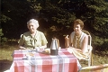

Gerda Birgit Signhild Brudell
Blev 93 år.
| Född: | 1915-12-16 Kamlunge, Töre fs, Kalix sn. [1] | Nedkomstant. Töre fs; Attest till Pastorsämb. i Öfverluleå 1915-12-27. |
|---|
| Döpt: | 1915-12-26 Kamlunge, Töre fs, Kalix sn. [2] | Faddrar: Anna och Erik Eriksson; Per och Matilda Gustafsson
Dopförättare: L. Ekmark
|
|---|
| Levde: | 1915-12-31 Yttermorjärv, Töre fs, Kalix sn (BD). [3] | |
|---|
| Levde: | 1917-11-09 Jörn, Jörns fs, Jörns sn. [4] | |
|---|
| Levde: | 1926 Jörn, Jörns fs, Jörns sn. [4] | |
|---|
| Inflyttad till: | 1930-12-23 Skellefteå stad. [5] | |
|---|
| Änka: | 1986-10-08 Boliden, Skellefteå sn. [6] | |
|---|
| Levde: | 2004-11-15 Boliden fs, Skellefteå kn. | |
|---|
| Levde: | 2006-06-20 Öjag 42 D, Öjebyn, Piteå lfs, Piteå kn. [7] | |
|---|
| Död: | 2009-02-15 Öjebyn, Piteå lfs, Piteå kn. | |
|---|
| Begravd: | 2009-03-10 Öjebyn, Piteå lfs, Piteå kn. | I Johannes Döparens kapell, Öjebyn, på tisdagen för Birgit Forsell, Öjebyn. Officiant var Krister Berg. |
|---|
| Vigsel: | 1937-02-07 Boliden, Skellefteå lfs, Skellefteå sn. [8] | Vigsel i Sollentuna fs, Stockholm. Birger Algot Forsell, arb. och Birgit Signhild Brudell, arbd., båda från Boliden. Vigselförrättare: Kde E. Höglund i Sollentuna fs, Stockholm. Attest från vigselförrättaren 1937-02-09. |
|---|
| Levde: | 1970 Bjurliden 1:522, Torget 2, Boliden, Bolidens fs, Skellefteå kn. [9] | |
|---|
| Levde: | 1980 Bjurliden 1:522, Torget 2, Boliden, Bolidens fs, Skellefteå kn. [10] | |
|---|
Personhistoria
| Årtal | Ålder | Händelse |
|---|
| 1915 |
|
Födelse 1915-12-16 Kamlunge, Töre fs, Kalix sn [1] |
| 1915 |
10 dagar |
Dop 1915-12-26 Kamlunge, Töre fs, Kalix sn [2] |
| 1915 |
15 dagar |
Levde 1915-12-31 Yttermorjärv, Töre fs, Kalix sn (BD) [3] |
| 1917 |
1 år |
Levde 1917-11-09 Jörn, Jörns fs, Jörns sn [4] |
| 1919 |
3 år |
Systern Mabel Bernhild Brudell föds 1919-01-10 Jörns fs, Jörns sn [11] |
| 1926 |
|
Levde 1926 Jörn, Jörns fs, Jörns sn [4] |
| 1930 |
15 år |
Inflyttad till 1930-12-23 Skellefteå stad [5] |
| 1937 |
21 år |
Vigsel Verkmästare vid Bolidens Gruvaktiebolag Birger Algot Forsell 1937-02-07 Boliden, Skellefteå lfs, Skellefteå sn [8] |
| 1942 |
26 år |
Sonen Företagsledare Kurt Arne Forsell föds 1942-07-16 Boliden, Skellefteå lfs, Skellefteå sn [12] |
| 1949 |
|
Dottern Ulla-Stina Forsell föds 1949 Boliden, Skellefteå lfs, Skellefteå sn [9] |
| 1961 |
45 år |
Systern Mabel Bernhild Brudell dör 1961-09-28 Bildhuggarvägen 16, Enskede fs, Stockholms stad [13] |
| 1968 |
52 år |
Fadern Bernhard Sigfrid Gustafsson Brudell dör 1968-03-04 Karlbergsvägen 33 2 Tr, Johanneshov, Gustav Vasa fs, Stockholms stad [14] |
| 1970 |
|
Levde Verkmästare vid Bolidens Gruvaktiebolag Birger Algot Forsell 1970 Bjurliden 1:522, Torget 2, Boliden, Bolidens fs, Skellefteå kn [9] |
| 1976 |
60 år |
Modern Gerda Eriksson dör 1976-05-01 Stockholm., Gustav Vasa fs, Stockholms stad [15] |
| 1980 |
|
Levde Verkmästare vid Bolidens Gruvaktiebolag Birger Algot Forsell 1980 Bjurliden 1:522, Torget 2, Boliden, Bolidens fs, Skellefteå kn [10] |
| 1981 |
65 år |
Brodern Bert Erik Gerhard Brudell dör 1981-12-04 Gåsen 12, Stationsg 34, Luleå domkyrko fs, Luleå kn [16] |
| 1986 |
70 år |
Maken Verkmästare vid Bolidens Gruvaktiebolag Birger Algot Forsell dör 1986-10-08 Bjurliden 1:522, Torget 2, Boliden, Bolidens fs, Skellefteå kn [6] |
| 1986 |
70 år |
Änka 1986-10-08 Boliden, Skellefteå sn [6] |
| 2004 |
88 år |
Levde 2004-11-15 Boliden fs, Skellefteå kn |
| 2006 |
90 år |
Levde 2006-06-20 Öjag 42 D, Öjebyn, Piteå lfs, Piteå kn [7] |
| 2009 |
93 år |
Död 2009-02-15 Öjebyn, Piteå lfs, Piteå kn |
| 2009 |
|
Begravning 2009-03-10 Öjebyn, Piteå lfs, Piteå kn |
Källor
| [1] | Födelsebok (1909-1919) nr.122/1915 s.146 |
| |
| | |
| [2] | Födelsebok (1909-1919) 122/1915 s.146 |
| |
| | |
| [3] | Överluleå B:4 (1912-1916) löpnr. 466/1915 s.131 k.3/3, Töre AIIa1c (1909-1920) s.915 k.5/6 |
| |
| | |
| [4] | Jörn AIIa:6 (1918-1926) s.85 k.2/8 |
| |
| | |
| [5] | Skellefteå Sankt Olov AIIA:2C (1929-1931) fol. 552 |
| |
| | |
| [6] | SPAR 90, RTB 86 |
| |
| | |
| [7] | www.birthday.se |
| |
| | |
| [8] | SCB Vigda AC Skellefteå lfs 14/1937, SPAR 90, RTB 86 |
| |
| | |
| [9] | Mtl Västerbottens län 1971 |
| |
| | |
| [10] | Mtl Västerbottens län 1981 |
| |
| | |
| [11] | Jörn C:6 (1918-1920) nr. 9/1919 s.55 k.2/7 |
| |
| | |
| [12] | SCB Födda AC Skellefteå lfs 220/1942, Mtl Stockholms stad och län 1971 |
| |
| | |
| [13] | DB, PA / DOR 61 |
| |
| | |
| [14] | DOR 68 / PA, DB / DOR 68 / RFV 70 / RFV 70 |
| |
| | |
| [15] | RTB 76, MTL 71 |
| |
| | |
| [16] | SPAR 90, RTB 81 |
| |
|
 |
| 1941. Med fontän och bassäng i bakgrunden vid Torget i Boliden. |
| |
 |
| 1942. Birgit med Arne 4 månader. |
| |
 |
| 1969-07-19. Brudparet Kerstin Lennerstrand och Arne Forsell flankeras av föräldrarna Åke och Margareta Lennerstrand t.v. och Birgit och Birger Forsell t.h. utanför Bromma kyrka. |
| |
|
| 1969-07-19. Svärmor Birgit Forsell i brudens hem. |
| |
|
| 1969-07-19. Svärmor Birgit Forsell i brudens hem i Bromma. |
| |
|
| 1969. Birgit Forsell. |
| |
|
| 1969-08. Birgit i eftermiddagssolen, "Färglådan", Boliden. |
| |
 |
| 1969-09. Birgit och Birger på besök hos Ulla-Stina och Jan, studentrummet, Fysikgränd, Ålidhem, Umeå. |
| |
|
| 1969-12-24. Birgit i vardagsrummet, Boliden. |
| |
|
| 1970-03-30. Birgit på långpromenad Annandag Påsk, Boliden. |
| |
|  |
| 1971. Gerda Brudell och Birgit Forsell på Dalaröbesök. |
| |
 |
| 1986-10. David, mormor Birgit, Peter vid morfar Birgers begravning. |
|


{kind=link}
{kind=link}
{kind=link}
{kind=link}
{kind=link}
{kind=link}
{kind=link}